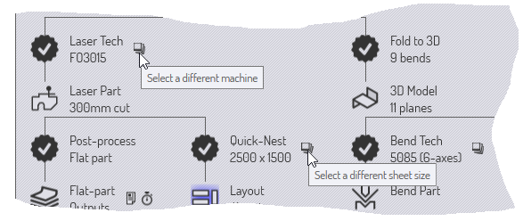

Przepływ pracy dla detalu
Jako że TecZone Bend ma wiele zintegrowanych modułów, często dostępnych jest wiele ścieżek transferu danych.
Przykład 1: gdy pobierasz dane płaskiego detalu (z pliku GEO lub pliku DXF), możesz wybrać poniższe działania.
-
Przypisz oprzyrządowanie laserowe do detalu, aby można go było umieścić na arkuszu i wykonać cięcie wraz z innymi detalami.
-
Zegnij detal wzdłuż linii gięcia do detalu trójwymiarowego, aby można go było obrobić i obliczyć sekwencję gięcia dla prasy krawędziowej.
Przykład 2: podczas importowania modelu powierzchni 3D (z pliku IGES lub STEP) można wybrać poniższe działania.
-
Przeanalizuj powierzchnie i umieść 5-osiowe oprzyrządowanie laserowe CAM wzdłuż otworów, które należy poddać obróbce.
-
Rozpoznaj funkcje, przekonwertuj model powierzchni na model blachy metalowej i rozłóż go na płaski wzór do wykrawania za pomocą stempla.
Panel przepływu pracy
Panel Przebieg pracy jest jak centrum dowodzenia, z którego można kierować wszystkimi tymi ruchami. Gdy jakiś detal jest otwarty, zawsze możesz wyświetlić przepływ pracy, naciskając po prostu W lub klikając ikonę przepływu pracy w pasku poleceń po lewej stronie. Zapoznajmy się z panelem przepływu pracy; zacznijmy od importowania części 2D z informacjami o gięciu (na przykład pliku GEO). Wyświetlenie panelu przepływu pracy w tym momencie pokazuje następujące informacje:
-
Zaczęliśmy od Bend_28.geo, zaimportowaliśmy i wyczyściliśmy go, aby utworzyć detal 2D z blachy (wyświetlane są wymiary detalu).
-
Następnie w przepływie pracy widoczne staje odgałęzienie.
-
Można przypisać technikę laserową do detalu (oznacza to po prostu przypisanie dróg cięcia laserowego do konturów detalu).
-
Można złożyć płaski detal do 3D (wykryto 9 gięć).
-
Rozwijanie węzłów przepływu pracy: etap 1
Kliknij ikonę Technika Laserowa, aby przypisać oprzyrządowanie laserowe do detalu. Detal zostanie natychmiast poddany analizie i zostanie do niego dodane oprzyrządowanie laserowe. Następnie kliknij ikonę Złóż do 3D, aby zgiąć płaską część w 3D. Po wykonaniu tych czynności panel przepływu pracy wygląda następująco:

Jak pokazują adnotacje, na diagramie przepływu pracy istnieją różne typy węzłów.
-
Istnieją węzły Widoku detali, reprezentujące różne typy obróbki detalu. Kliknięcie tych węzłów przełącza detal na ten widok przedstawiający zestaw dostępnych dla niego operacji. Przykładowo w widoku detalu do obróbki laserem można zobaczyć i edytować oprzyrządowanie laserowe przypisane do detalu.
-
Można przełączać się między tymi widokami, klikając te ikony. Wszystkie te różne widoki detalu mają również klawisze skrótów, które można zobaczyć po wskazaniu myszką. Naucz się tych skrótów, aby szybko poruszać się po przepływie pracy. Tak więc po pewnym czasie będziesz używać kluczowych sekwencji, np. WBEsc do otwierania panelu przepływu pracy, przełączania detalu na widok gięcia i zamykania panelu przepływu pracy.
-
Dane części są przesyłane między tymi węzłami przez różne procesy, które są reprezentowane w panelu przepływu pracy za pomocą ikon 13-ramiennych gwiazdek. Przykładowo można przejść z widoku detalu 2D do widoku detalu do obróbki lasera przez proces technologii laserowej (który analizuje detal 2D i przypisuje do niego oprzyrządowanie laserowe).
Zakończone procesy są oznaczone znacznikiem wyboru. Nadal nieukończone (dostępne) procesy (ale które są dostępne) mają w środku wyświetlony krzyżyk. Aby ukończyć procesy, kliknij węzły procesów.
Podsumujmy, co widzimy na tym etapie przepływu pracy dla naszego detalu:
-
Obecnie dostępne są 3 widoki detalu (Detal 2D, Detal do obróbki laserem i Model 3D, między którymi możemy się przełączać).
-
Dostępne są cztery dodatkowe procesy:
-
Edycja dodatkowa płaskiego detalu (generuje raport płaskiego detalu przydatny dla operatora lasera lub prasy wykrawającej; zwykle obejmuje czasy cięcia laserowego, konfigurację narzędzi dla wykrawarek i inne specjalne wymagania dotyczące oprzyrządowania dla tego detalu).
-
Szybkie układanie (gniazdo, które zawiera tylko jeden typ detalu), które generuje cały arkusz wypełniony tym detalem. Może być używany do produkcji arkusza wypełnionego tylko tym detalem lub do pomocy w szybkim oszacowaniu kosztów lub czasu pracy dla tego detalu.
-
Do detalu możemy przypisać Technologię gięcia (oprzyrządowanie prasy krawędziowej).
-
Do detalu możemy przypisać Technologię spawania (oprzyrządowanie robota spawalniczego).
-
Rozwijanie węzłów przepływu pracy: etap 2
Przejdźmy dalej: kliknij pojedynczo wszystkie dostępne węzły procesu i zobacz, jak rozwija się panel przepływu pracy. Kontynuuj, aż nie będzie więcej węzłów. Tak powinien wyglądać ekran po wykonaniu tych procesów :

W tym w pełni rozwiniętym stanie panel przepływu pracy ułatwia natychmiastowe przełączanie się między sześcioma różnymi widokami detalu w różnych modułach obróbczych. Można również przeglądać i przesyłać lub drukować różne dane wyjściowe generowane przez te moduły. (Wyjściami mogą być raporty, kod NC lub badania nad czasem pracy).
Poruszanie się po panelu przepływu pracy
Panel przepływu pracy zawiera wiele informacji i operacji w zwięzłej formie graficznej. Przez większość czasu będzie służył jako centralny węzeł do pracy z detalami. Przyjrzyjmy się bliżej niektórym ikonom w panelu przepływu pracy, aby zrozumieć, w jaki sposób można ich używać.
Dostępne węzły procesu
13-ramienna gwiazda z + w środku reprezentuje aktualnie dostępny etap obróbki. Przykładowo może to być złożenie detalu 2-D do detalu 3-D lub przypisanie oprzyrządowania laserowego. Najedź kursorem na taki węzeł, aby wyświetlić podpowiedź, która wyjaśnia, co zrobi węzeł.

Jest to zgodne z typowym wzorcem dla wielu dostępnych węzłów procesu. Kliknięcie węzła spowoduje wykonanie procesu z ustawieniami domyślnymi. Ctrl+Click na węźle wyświetla najpierw stronę ustawień, a następnie ustawienia przeglądania/edycji, po czym przeprowadzany jest proces. Przykładowo następujące procesy następują po Ctrl+Click w węźle szybkiego układania:

Wyświetlane są ustawienia szybkiego układania, dzięki czemu można je edytować przed wykonaniem układania.
Ukończone węzły procesu
Po zakończeniu procesu węzeł zmienia się z dostępnego węzła procesu na zakończony węzeł procesu; symbol staje się gwiazdką ze znacznikiem wyboru w jej wnętrzu. W tym momencie opcje dostępne dla tego węzła ulegają zmianie.

Jest to typowy zestaw opcji dostępnych w ukończonym węźle procesu. Kliknięcie węzła ponownie wywołuje ustawienia procesu, dzięki czemu można je dostosować i spróbować ponownie przetworzyć. Zwykle dostępna jest również opcjaCtrl+Click usuwająca dane procesu. Jeśli wybierzesz tę opcję, zostaniesz najpierw poproszony o potwierdzenie chęci usunięcia danych. Gdy Ctrl+Click węzeł modelu 3D dla w pełni obrobionego detalu, występują poniższe zdarzenia (przykład):

Polecenia pomocnicze
Wiele węzłów ma w pobliżu małe ikony poleceń pomocniczych. Te polecenia opisują funkcje dotyczące danego węzła. Oto kilka przykładów.
-
Ikony pomocnicze w pobliżu każdego węzła technologicznego zazwyczaj pozwalają wybrać różne maszyny i narzędzia dla tej maszyny.
 -
Ikona w pobliżu węzła szybkiego układania pozwala przeprowadzić układanie w innym rozmiarze arkusza.
-
Ikony w pobliżu węzłów wyjściowych umożliwiają przeglądanie różnych danych wyjściowych z węzła procesu (raportów, programów NC lub badań nad czasem pracy).

Śledzenie pliku źródłowego

Większość procesów w TecZone Bend rozpoczyna się od zaimportowania danych CAD (2-D lub 3-D). Detale TecZone Bend zbudowane na podstawie tych danych CAD mogą nadal śledzić dane źródłowe. Po otwarciu detalu TecZone Bend może sprawdzić, czy oryginalny plik CAD, z którego został utworzony detal, został w międzyczasie zmieniony. Jeśli tak, detal staje nieaktualny, co można zobaczyć w przepływie pracy panelu.
-
Można odświeżyć detal, klikając przycisk odświeżania ikony pomocniczej detalu w pliku węzła detalu źródłowego. TecZone Bend ponownie zaimportuje geometrię CAD i przebuduje detal.
-
Można również zatrzymać śledzenie oryginalnej geometrii CAD. Może to być przykładowo przydatne, jeśli oryginalny plik CAD istnieje na nośniku lub dysku sieciowym, do którego może nie być dostępu w przyszłości. Aby to zrobić, kliknij ikonę pomocniczego łącza w pobliżu węzła pliku źródłowego. Spowoduje to wyświetlenie monitu o zaprzestanie śledzenia pliku źródłowego:

Podsumowanie
Oto krótkie podsumowanie zasad w panelu przepływu pracy.
-
Panel przepływu pracy wyświetla węzły reprezentujące różne widoki detalu (takie jak detal do obróbki laserem, gięcie detalu) i węzły reprezentujące różne procesy (takie jak składanie do 3D, przypisywanie oprzyrządowania laserowego).
-
Dostępne węzły procesu (jeszcze niezrealizowane) są reprezentowane jako 13-ramienne gwiazdy ze znakiem w środku. Już ukończone węzły procesu są reprezentowane przez gwiazdy ze znakiem w środku.
-
Kliknięcie dostępnego węzła procesu wywołuje ten proces z ustawieniami domyślnymi. Ctrl+Click na dostępnych węzłach procesu wywołuje edytor w celu edycji ustawień procesu, a następnie jego wywołania.
-
Kliknięcie ukończonego węzła procesu umożliwia dostosowanie ustawień procesu i jego ponowne wykonanie. Ctrl+Click na zakończonym węźle procesu usuwa jego dane.
-
Małe ikony pomocnicze w pobliżu węzła procesu lub węzła widoku detalu umożliwiają zmianę ważnych parametrów tego węzła procesu (jak maszyna docelowa rozmiar arkusza w gnieździe).